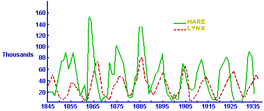

Mathematics 172
Section 002, Fall 2019
Mathematical Modeling for the Life Sciences.
Leconte College 101
MWF 9:40am-10:30am.
Instructor:
Ralph Howard
- Prerequisites:
- C or better in Math 122 or Math 141.
- Recommended Text:
- A
Primer of Ecology by Nicholas
J. Gotelli, fourth
edition.
This is not required, but is a good supplement to the lectures.
- Calculators:
- You should bring a calculator to class each day.
Preferred is the TI-83 or TI-84 as this is what will be used for the
demonstrations. There are other types of calculators that will do all
that we need and it is fine if you use one of them (but it you have
trouble with it, I may not be able to help, but I will try).
- Syllabus:
- It is here . It contains the basic
information about grading and the dates of the tests.
Homework:
Homework 1
Homework 2
Homework 3
Quizzes:
Quiz 1
Quiz 2
Tests: